A Story Nearly 29 Years in the MakingUma história de quase 29 anos
He gave his father the gift of life.
Now he needs yours.Ele deu ao pai o dom da vida.
Agora ele precisa do seu.
In 1997, Brian Wilson donated one of his kidneys to save his father Herman's life. Today, Brian's remaining kidney is failing — and he needs a transplant to survive.Em 1997, Brian Wilson doou um de seus rins para salvar a vida de seu pai Herman. Hoje, o rim restante de Brian está falhando — e ele precisa de um transplante para sobreviver.
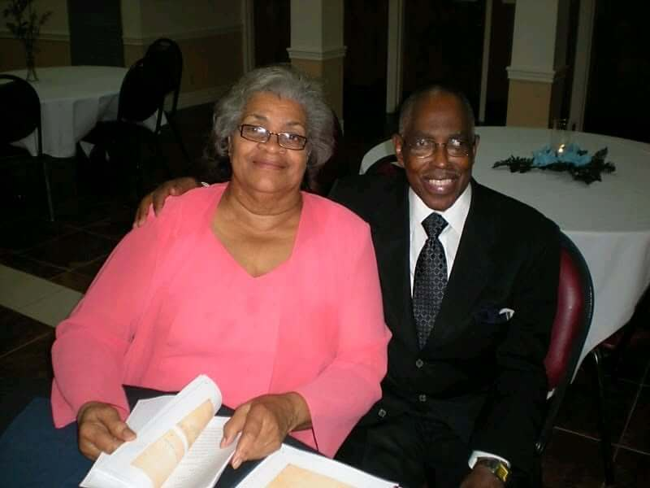
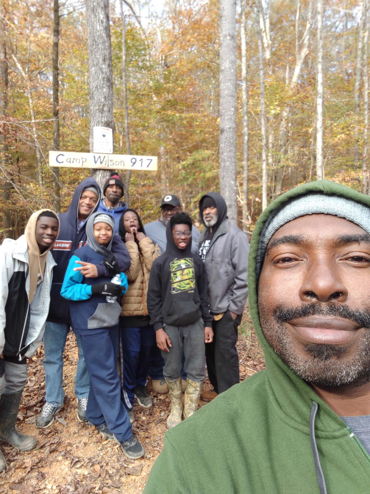
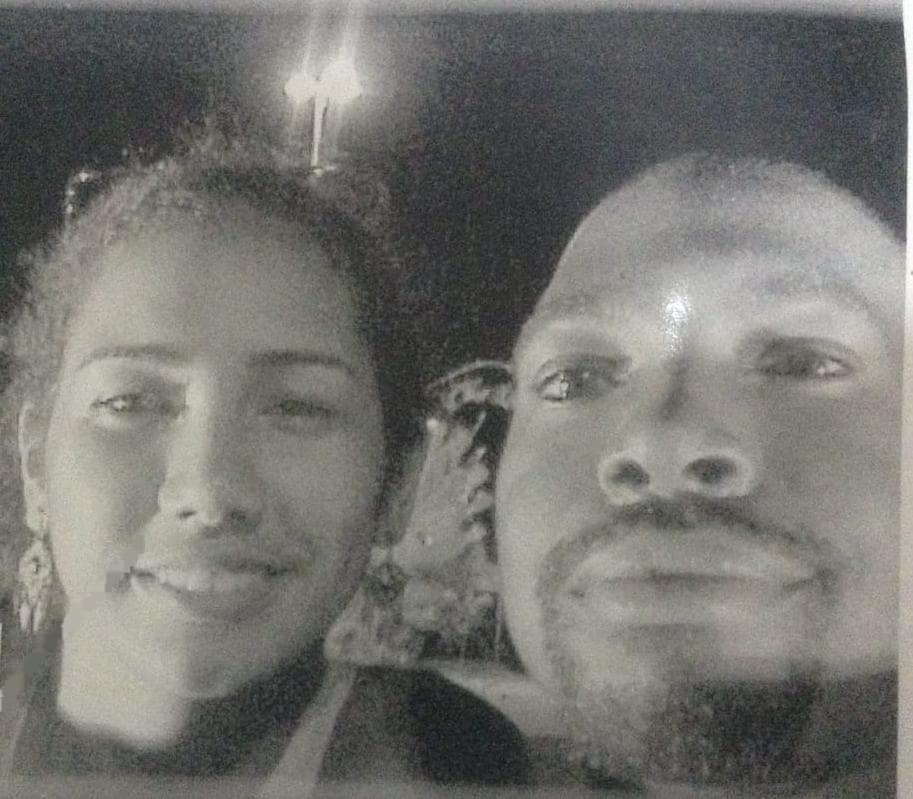
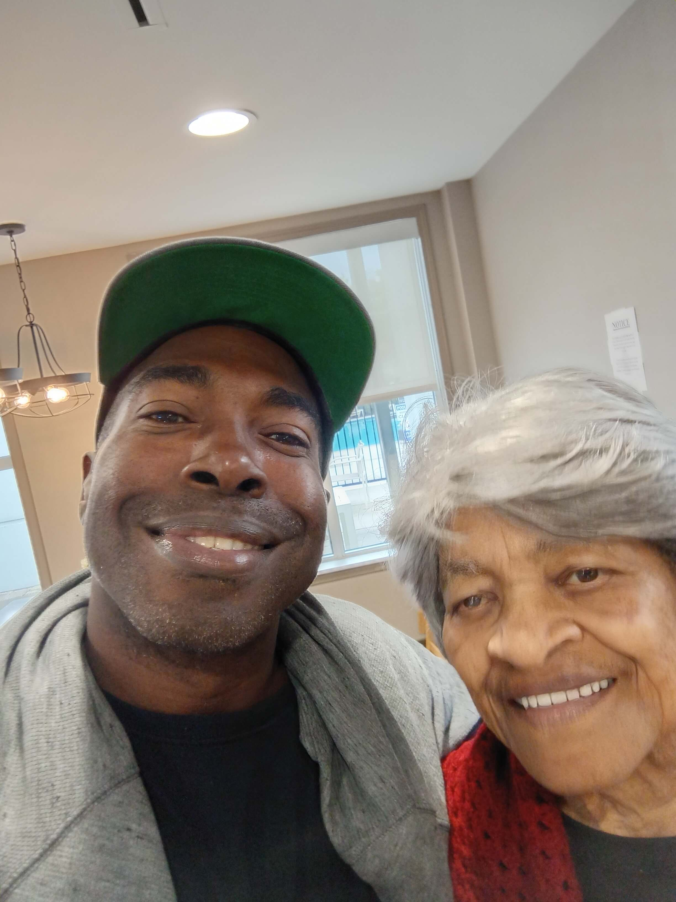
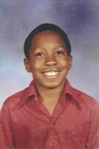
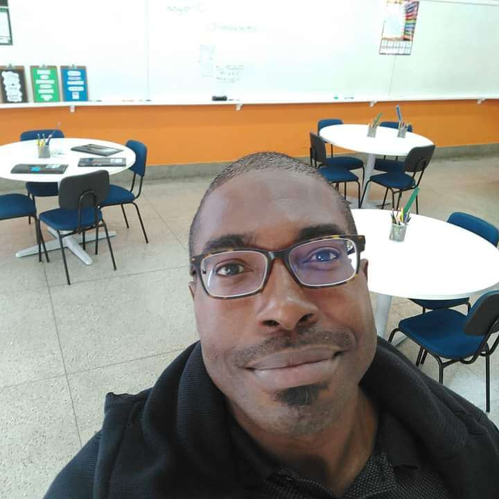
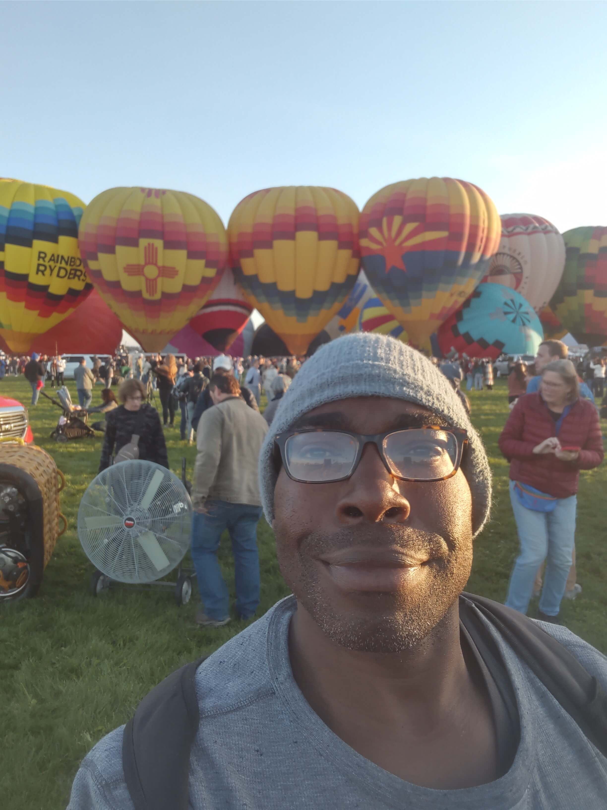
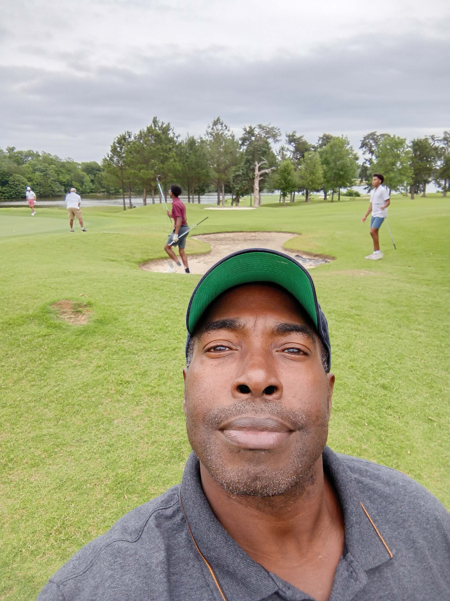
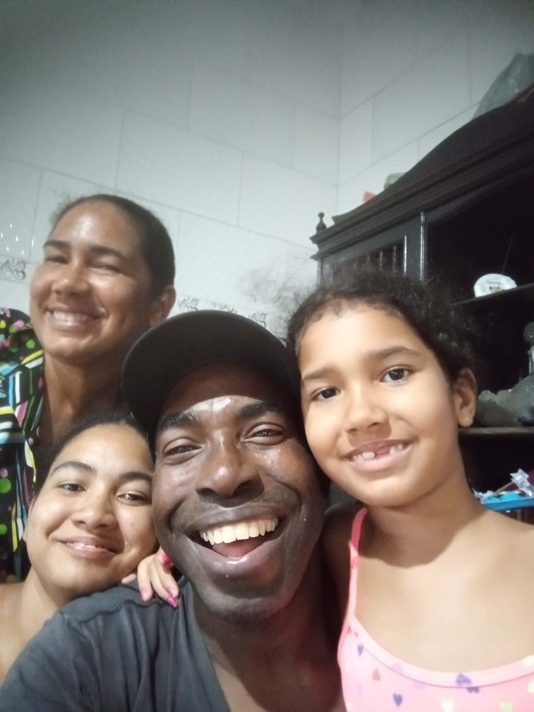
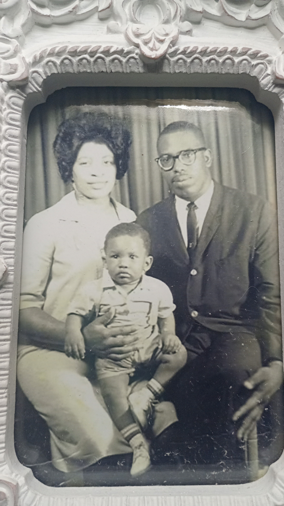
In Loving MemoryEm Memória Amorosa
Selma Wilson — The Superhero Behind the StorySelma Wilson — A Super-Heroína por Trás da História
Selma & Herman Wilson
Brian & Mama SelmaBrian & Mamãe Selma
Selma, Herman & firstborn DarrylSelma, Herman & primogênito Darryl
Selma Wilson was not just a mother. She was the backbone, the heartbeat, and the quiet force that made everything possible. A phenomenal mother of 9 children and 16 grandchildren, she served as Herman's personal nurse through 17 years of home dialysis in Jackson, Mississippi — providing guidance, nourishment, and unwavering love every single day.Selma Wilson não era apenas uma mãe. Ela era a espinha dorsal, o coração e a força silenciosa que tornava tudo possível. Uma mãe fenomenal de 9 filhos e 16 netos, ela serviu como enfermeira pessoal de Herman durante 17 anos de diálise em casa em Jackson, Mississippi.
In 1997, when Brian gave his kidney to his father, Selma traveled tirelessly between Birmingham and Jackson — holding both her husband and son through surgery, recovery, and transition. She held the family together at its most fragile moment.Em 1997, quando Brian doou seu rim ao pai, Selma viajou incansavelmente entre Birmingham e Jackson — sustentando marido e filho durante a cirurgia, a recuperação e a transição.
She was the family's and community's superhero, griot, mother, friend, sister, healer, and all-purpose doer of it all.Ela era a super-heroína da família e da comunidade, griô, mãe, amiga, irmã, curadora e realizadora de tudo.
Brian's StoryA História de Brian
From the very beginning — a life shaped by love and sacrificeDesde o início — uma vida moldada pelo amor e sacrifício
Camp Wilson 917
Brian Wilson todayBrian Wilson hoje
Brian Wilson
Young BrianBrian jovem
As Reported in The Clarion-LedgerPublicado no The Clarion-Ledger
The 1997 Newspaper StoryA Reportagem de 1997
Journalist Lisa Uzzle Gates wrote this feature about the Wilson family — proof of what Brian did, selfless and extraordinary.A jornalista Lisa Uzzle Gates escreveu esta reportagem sobre a família Wilson.
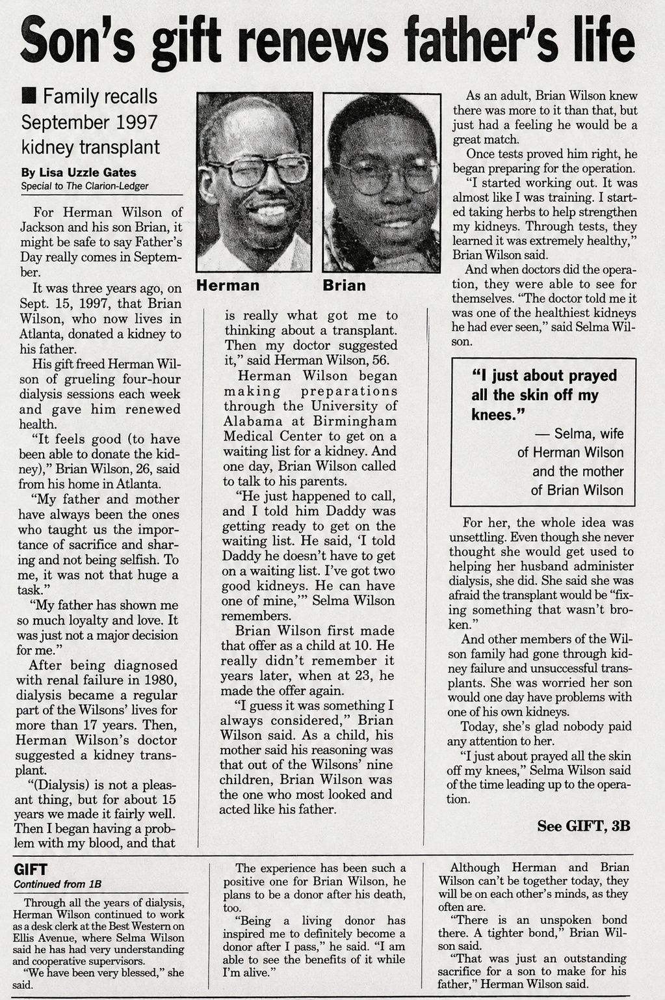
"Son's Gift Renews Father's Life" — The Clarion-Ledger, 1997
How Your Support HelpsComo Seu Apoio Ajuda
What Brian needs during his transplant journeyO que Brian precisa durante sua jornada de transplante
Every gift moves Brian closer to a second chance at lifeCada doação aproxima Brian de uma segunda chance de vida
Choose the giving method that works best for you. Every amount makes a real difference.Escolha o método de doação que funciona melhor para você.
💛 Donate on GoFundMeDoe no GoFundMeCould You Be a Match?Você Poderia Ser Compatível?
One person's decision to explore donation could save Brian's lifeA decisão de uma pessoa de explorar a doação pode salvar a vida de Brian
The first step is simply finding out if you might be eligible — no commitment required.O primeiro passo é simplesmente descobrir se você pode ser elegível — sem compromisso.